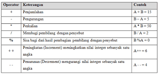

Tipe data dalam bahasa pemrograman merujuk pada jenis nilai yang dapat disimpan dan dioperasikan oleh suatu variabel atau ekspresi. Tipe data menentukan sifat dan operasi yang dapat dilakukan pada nilai-nilai tersebut. Setiap bahasa pemrograman memiliki aturan dan jenis tipe data yang berbeda.
Pemahaman tentang tipe data sangat penting dalam pemrograman karena membantu kompiler atau interpreter untuk mengelola memori dengan benar dan memastikan bahwa operasi yang dilakukan pada nilai sesuai dengan aturan yang ditetapkan untuk tipe data tersebut. Kesalahan dalam penggunaan tipe data dapat menyebabkan bug atau masalah dalam program.
Tipe Data Sederhana merupakan tipe data yang sudah ada dan dijadikan standar dalambahasa pemrograman tertentu. Isi dari Tipe Data Sederhana ini adalah data-data tunggal.
Numerik
- Numerik Integer
- Numerik Real
Karakter
- Alfabet : a - z ,A - Z
- Angka : 0 - 9
Boolean
- True
- False
Tipe Data terstruktur terdapat tiga bagian antara lain
array adalah struktur data yang digunakan untuk menyimpan kumpulan nilai atau elemen data yang serupa di dalam satu variabel. Setiap elemen dalam array diakses menggunakan indeks atau posisi relatif terhadap elemen lainnya. Indeks dimulai dari 0 untuk elemen pertama, 1 untuk elemen kedua, dan seterusnya.
Tipe data rekaman di gunakan untuk menampung data yang terdiri dari bebrapa tipe yang berbeda .Record dapat di akses (di isi) dan di baca per elemen record dengan menyebut nama elemennya.
Merupakan sebuah tipe data yang di dalamnya memuat sejumlah elemen (anggota) dimana anggotanya memiliki tipe data dasar yang sama.
Berikut operator di dalam bahasa pemrograman JAVA :
